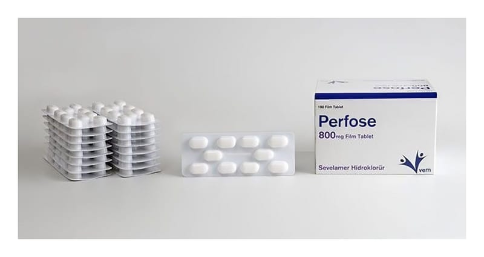

Perfose 800 mg Film Kaplı TABLET,180 Adet

Ne için kullanılır
KT · Bölüm 1PERFOSE etkin madde olarak sevelamer hidroklorür içerir ve karton kutu içerisinde 180 film kaplı tablet içeren ambalajlarda kullanıma sunulmaktadır. Sevelamer hidroklorür, sindirim yolundaki yiyeceklerdeki fosforu bağlar ve bu şekilde kandaki fosfor seviyelerini düşürür. Hemodiyaliz veya periton diyaliz tedavisi gören yetişkin böbrek yetmezliği hastalarında kandaki fosfor seviyesi kontrol edilemez. Kandaki fosfor seviyesi yükselir (doktorunuz bunu hiperfosfatemi olarak adlandıracaktır). Kandaki fosfor seviyesinin yükselmesi vücudunuzda katı artıkların oluşmasına neden olabilecek kalsifikasyon olarak isimlendiren duruma
sebebiyet verebilir. Bu artıklar kan damarlarınızı tıkayabilir ve vücudunuzdaki kan akışını zorlayabilir. Kandaki fosfor seviyesinin yükselmesi ayrıca deride kaşıntı, gözde kırmızılık, kemik ağrısı ve kırıklara neden olabilir. PERFOSE hemodiyaliz veya periton diyaliz tedavisi gören yetişkin böbrek yetmezliği hastalarında kandaki fosfor seviyesinin kontrol edilmesi için kullanılmaktadır. Böbrek kaynaklı kemik hastalığı gelişiminin kontrol edilmesi için PERFOSE ile birlikte kalsiyum veya vitamin D takviyesi gibi başka ilaçların da kullanılması gerekli olabilir.